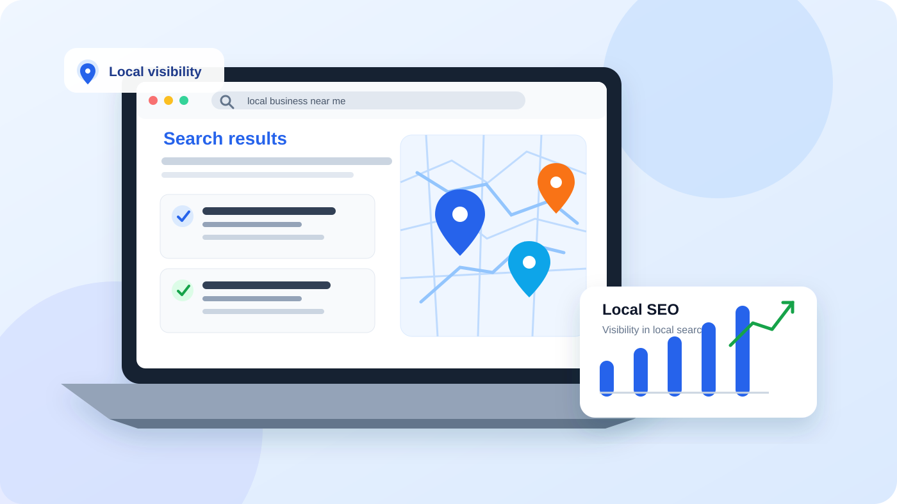

كيف تجعل نشاطك التجاري يظهر في نتائج البحث المحلية؟ دليل Local SEO عملي
عندما يبحث شخص عن مطعم أو طبيب أو ورشة أو خدمة قريبة منه، فهو غالبًا يريد اتخاذ خطوة فعلية، لا مجرد قراءة معلومات. يساعدك SEO المحلي على جعل نشاطك أوضح لمحركات البحث وأسهل في العثور عليه من العملاء المناسبين.
بقلم imad limrani · 29 أكتوبر 2026

ما المقصود بـ Local SEO؟
يشير Local SEO أو تحسين محركات البحث المحلي إلى مجموعة ممارسات تساعد نشاطًا يخدم منطقة جغرافية محددة على الظهور عندما يبحث الناس عن منتجاته أو خدماته في تلك المنطقة. قد تظهر النتائج في صفحة البحث العادية، أو في نتائج الخرائط والحزمة المحلية التي تعرض أنشطة قريبة.
على سبيل المثال، قد يبحث المستخدم عن «سباك في الدار البيضاء» أو «مقهى قريب مني». تختلف النتائج حسب الاستعلام والموقع والسياق، لذلك لا توجد طريقة تضمن المركز الأول لكل شخص. الهدف الواقعي هو تزويد Google والعملاء بمعلومات دقيقة ومتسقة، وصفحات تجيب بوضوح عن الخدمة والمكان وطريقة التواصل.
لمن يفيد تحسين SEO المحلي؟
يفيد هذا النوع من التحسين الأنشطة التي تعتمد على منطقة خدمة أو موقع فعلي، مثل:
- المتاجر والمطاعم والمقاهي التي تستقبل الزبائن في موقع محدد.
- الأطباء وعيادات الأسنان ومراكز الخدمات المهنية.
- السباكون والكهربائيون وشركات الصيانة والتنظيف.
- مكاتب المحاماة والاستشارات والوكالات المحلية.
- الشركات التي تنتقل إلى العميل داخل نطاق خدمة واضح.
إذا كان مشروعك يعمل عبر الإنترنت فقط ولا يستهدف منطقة جغرافية محددة، فقد تكون الأولوية لتحسين صفحات الخدمات والمحتوى العام بدل بناء استراتيجية محلية لا تناسب نموذج العمل.
1. أنشئ ملف Google Business Profile واعتنِ بتفاصيله
يتيح Google Business Profile للنشاط المؤهل إدارة معلوماته التي قد تظهر في بحث Google وخرائط Google. ابدأ بإنشاء الملف أو المطالبة بملف موجود، ثم اتبع خطوات التحقق المتاحة لحالتك.
راجع البيانات الأساسية
- اسم النشاط: استخدم الاسم الحقيقي الذي يعرفك به العملاء، ولا تضف كلمات مفتاحية أو مدنًا إلى الاسم لمجرد محاولة تحسين الترتيب.
- الفئة الرئيسية: اختر الفئة الأقرب إلى النشاط الأساسي، وأضف فئات أخرى فقط عندما تصف خدمات تقدمها فعلًا.
- العنوان أو منطقة الخدمة: أدخل بيانات صحيحة. إذا كنت تعمل لدى العملاء ولا تستقبلهم في عنوانك، فراجع إعدادات النشاط الملائمة لهذا النموذج بدل عرض عنوان غير مخصص لاستقبال الزوار.
- رقم الهاتف والموقع: استخدم رقمًا فعالًا ورابطًا يقود إلى الصفحة المناسبة، وتأكد من أن بيانات الاتصال تعمل على الهاتف.
- ساعات العمل: حدّث ساعات العمل والعطلات والتغييرات المؤقتة حتى لا يصل العميل إلى مكان مغلق.
- الخدمات والصور: أضف وصفًا واضحًا للخدمات وصورًا حقيقية وحديثة تساعد العميل على فهم ما تقدمه.
لا تملأ الملف بكلمات مفتاحية مكررة، ولا تنشئ ملفات متعددة للنشاط نفسه دون سبب مؤهل. الدقة والالتزام بإرشادات Google أفضل من الحيل التي قد تؤدي إلى تعديل الملف أو تقييده.
2. حسّن صفحات موقعك لتوضح الخدمة والمنطقة
ملف النشاط التجاري مهم، لكنه ليس بديلًا عن موقع يشرح خدماتك. أنشئ صفحة واضحة لكل خدمة رئيسية تحتاج إلى شرح مستقل، واجعل معلومات الموقع والخدمة ظاهرة في النص بدل حشر أسماء المدن في كل فقرة.
ما الذي ينبغي أن تحتويه صفحة الخدمة المحلية؟
- عنوان يذكر الخدمة بوضوح، مع المنطقة عندما يكون ذلك طبيعيًا ومفيدًا.
- شرح لما تتضمنه الخدمة، ولمن تناسب، وكيفية طلبها.
- عنوان النشاط أو نطاق الخدمة ووسائل التواصل الصحيحة.
- صور أصلية أو أمثلة أعمال حقيقية، إذا كانت متاحة.
- إجابات عن الأسئلة العملية: التوقيت، خطوات الحجز، المناطق التي تغطيها الخدمة، أو ما يجب على العميل تحضيره.
- دعوة واضحة إلى الاتصال أو الحجز أو طلب عرض سعر، دون إزعاج الزائر بنوافذ منبثقة متكررة.
تجنب إنشاء عشرات الصفحات المتطابقة التي لا يتغير فيها سوى اسم المدينة. إذا لم يكن لكل صفحة محتوى مفيد ومعلومات محلية حقيقية، فقد لا تضيف قيمة للزائر. ابدأ بالمناطق التي تخدمها فعلًا، ووسّع الموقع عندما تتوفر معلومات مستقلة تستحق صفحة منفصلة.
3. ابحث عن الكلمات المفتاحية المحلية التي يستخدمها العملاء
لا تفترض أن كل العملاء يكتبون اسم الخدمة بالطريقة نفسها. قد يبحث بعضهم عن اسم المهنة، وآخرون عن المشكلة التي يريدون حلها، بينما يستخدم فريق ثالث اسم الحي أو المدينة.
اجمع أفكارك من مكالمات العملاء ورسائلهم، واقتراحات البحث، وتقارير الأداء المتاحة في Search Console. ثم صنّف العبارات بحسب ما يحتاجه الباحث: معلومات، مقارنة بين الخيارات، أو تواصل مباشر مع مقدم الخدمة.
مثال لورشة إصلاح أجهزة في مدينة معينة:
- «إصلاح حاسوب محمول في [المدينة]» — يبحث عن خدمة محددة.
- «لماذا ترتفع حرارة اللابتوب؟» — يبحث عن تفسير أو حل أولي.
- «تكلفة تغيير شاشة الحاسوب» — يريد تقديرًا للسعر قبل التواصل.
قد تحتاج هذه العبارات إلى صفحات مختلفة: صفحة خدمة، ومقال إرشادي، وصفحة تشرح نطاق الأسعار أو العوامل التي تحدد التكلفة. للمزيد حول طريقة جمع العبارات وتقييم نية البحث، راجع دليل اختيار الكلمات المفتاحية.
4. اجعل بيانات النشاط متسقة في الموقع والمنصات الأخرى
راجع الاسم والعنوان ورقم الهاتف وساعات العمل في موقعك وملف Google والدلائل المهنية الموثوقة التي تستخدمها فعلًا. اختلافات بسيطة مثل رقم قديم أو عنوان سابق قد تربك العميل وتزيد صعوبة التأكد من المعلومات.
لا تحتاج إلى إدراج نشاطك في كل دليل متاح. أعط الأولوية للمواقع المعروفة في بلدك أو مجالك، والغرف المهنية أو الجمعيات ذات الصلة، والمنصات التي يستخدمها عملاؤك. ابتعد عن شراء قوائم روابط عشوائية أو إنشاء ملفات في مواقع لا تضيف قيمة حقيقية.
5. شجّع التقييمات الحقيقية وردّ عليها باحتراف
تساعد التقييمات العملاء على فهم تجارب الآخرين، وقد تكون جزءًا من الإشارات التي تدخل في نتائج البحث المحلي. اطلب من العملاء الحقيقيين مشاركة رأيهم بعد الخدمة بطريقة بسيطة ومحايدة، من دون اشتراط تقييم إيجابي أو تقديم مكافأة مقابل مراجعة تخالف سياسات المنصة.
عند الرد على تعليق إيجابي، اشكر العميل بإيجاز. وإذا كان التعليق سلبيًا، فاعترف بالمشكلة إن ثبتت، وقدم طريقة مناسبة لمتابعتها خارج النقاش العام عندما تتضمن تفاصيل خاصة. لا تكشف بيانات العميل ولا تدخل في جدال علني.
الأهم هو تحسين الخدمة نفسها. لا يمكن لتعليقات مصطنعة أو ردود منسوخة أن تعوّض تجربة سيئة، كما لا ينبغي حذف النقد المشروع لمجرد أنه سلبي.
6. استخدم الصور والمحتوى المحلي لإثبات صلة النشاط بالمنطقة
أضف صورًا واضحة وحديثة للمكان أو فريق العمل أو المنتجات أو نماذج الأعمال، بشرط أن تمثل النشاط فعلًا وأن تكون لديك حقوق استخدامها. اكتب نصوصًا بديلة تصف ما يظهر في الصورة عندما تكون الصورة جزءًا من محتوى الصفحة؛ لا تحوّل النص البديل إلى قائمة كلمات مفتاحية.
يمكن للمحتوى المحلي أن يجيب عن احتياجات فعلية، مثل دليل لاختيار خدمة في منطقتك، أو شرح لطريقة العمل، أو توضيح للمناطق التي تغطيها الشركة. تجنب نسخ محتوى عام ثم استبدال أسماء المدن فقط. اذكر التفاصيل المحلية عندما تكون مفيدة وصحيحة، لا لمجرد تكرار اسم المدينة.
7. راقب الأداء بدل الحكم من بحث واحد
قد تختلف النتائج بحسب مكان الباحث والجهاز والاستعلام والوقت. لذلك لا تعتمد على البحث عن اسم نشاطك من هاتف واحد باعتباره مقياسًا كافيًا للنجاح. راقب مجموعة مؤشرات معًا:
- المكالمات وطلبات الاتجاهات والنقرات على الموقع المتاحة في إحصاءات ملف النشاط.
- النقرات ومرات الظهور والاستعلامات والصفحات في Google Search Console.
- الزيارات التي تصل إلى صفحات الخدمات المحلية، ومدى تفاعلها مع أزرار الاتصال أو الحجز.
- جودة العملاء المحتملين والطلبات الفعلية، وليس عدد الزيارات وحده.
قارن الفترات المتشابهة، وانتبه إلى الموسمية والتغييرات في ساعات العمل أو الخدمات. وإذا لم يظهر موقعك في Google، فابدأ بفحص الفهرسة والزحف عبر دليل أسباب عدم ظهور الموقع في Google، ثم افحص بيانات الأداء في Search Console.
أخطاء شائعة تضعف SEO المحلي
- إضافة كلمات أو أسماء مدن إلى اسم النشاط خلافًا لاسمه الحقيقي.
- ترك رقم الهاتف أو ساعات العمل أو العنوان بمعلومات قديمة.
- إنشاء صفحات مدن متشابهة بلا معلومات محلية مفيدة.
- شراء تقييمات أو طلب تقييم إيجابي فقط.
- استخدام صور لا تمثل المكان أو الخدمة الحقيقية.
- توقع نتيجة فورية أو ضمان مركز محدد في البحث.
- التركيز على الترتيب وحده وإهمال سهولة التواصل وجودة الخدمة.
خطة عمل مبسطة لأول 30 يومًا
- الأسبوع الأول: راجع ملف Google Business Profile، وأكمل بيانات النشاط، وتحقق من الهاتف والعنوان وساعات العمل.
- الأسبوع الثاني: حسّن الصفحة الرئيسية وصفحات الخدمات، وأضف تفاصيل واضحة عن المنطقة وطرق التواصل.
- الأسبوع الثالث: راجع التقييمات وردّ عليها، وحدّث الصور، وصحح البيانات القديمة في المنصات المهمة.
- الأسبوع الرابع: سجّل مؤشرات الأداء الأساسية، وافحص الاستعلامات والصفحات في Search Console، وحدد أهم تحسينين للشهر التالي.
هذه خطة بداية وليست وعدًا بموعد محدد للظهور أو زيادة الترتيب؛ تختلف النتائج حسب المنافسة وحالة الموقع ونوع النشاط والمنطقة.
الخلاصة: اجعل العثور عليك والتواصل معك أمرًا سهلًا
يبدأ SEO المحلي من معلومات صحيحة، وملف نشاط مكتمل، وصفحات مفيدة، وتقييمات حقيقية، وقياس منتظم للنتائج. اختر اليوم خطوة واحدة تستطيع تنفيذها — مثل تحديث ساعات العمل أو تحسين صفحة خدمة — ثم راقب أثرها قبل الانتقال إلى تغييرات أخرى.
ما أكبر تحدٍّ يواجه نشاطك حاليًا: الظهور في الخرائط، أم تحسين صفحات الموقع، أم الحصول على طلبات تواصل أكثر؟
الكاتب وصاحب الموقع: imad limrani
تابع تحسين ظهور موقعك
استخدم هذه الأدلة للانتقال من تحسين الظهور المحلي إلى مراجعة صفحاتك وقياس نتائجها: